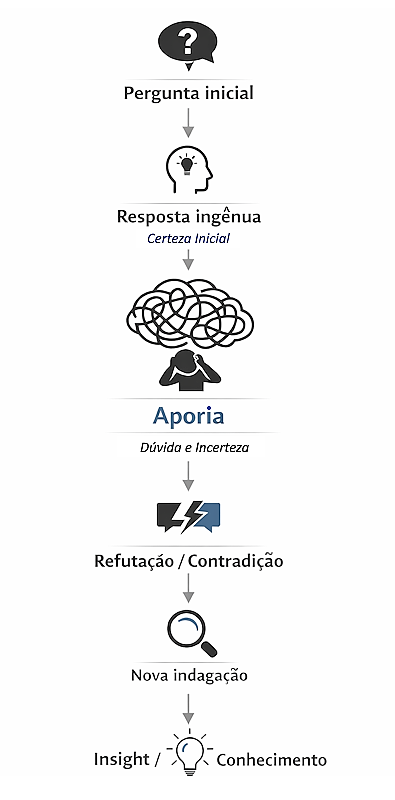
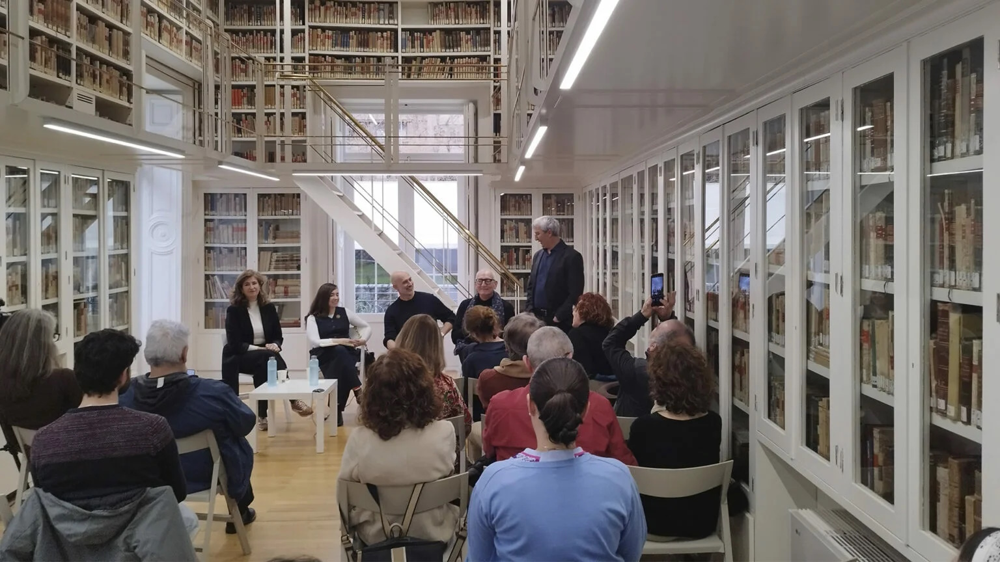
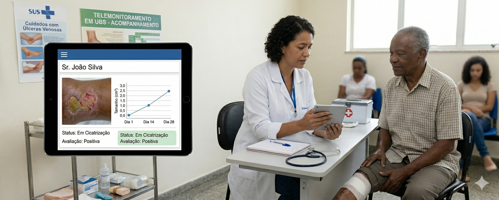
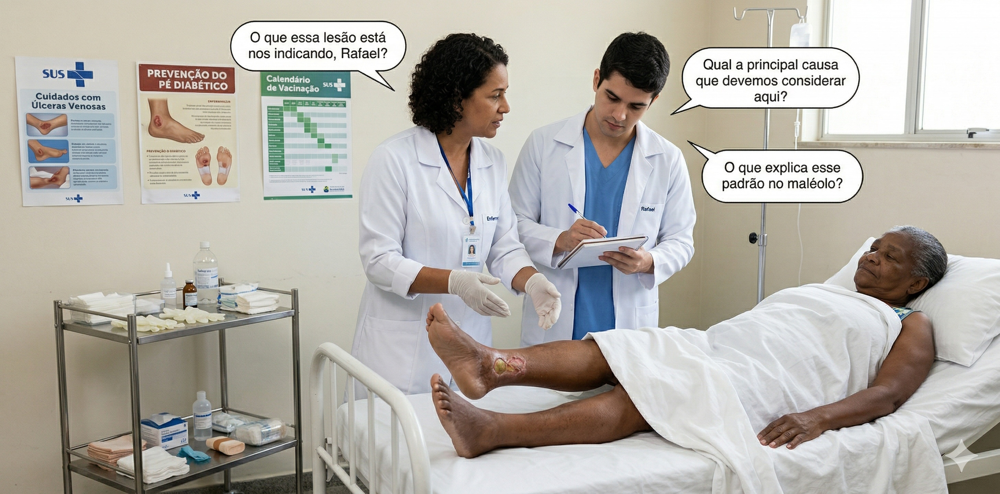
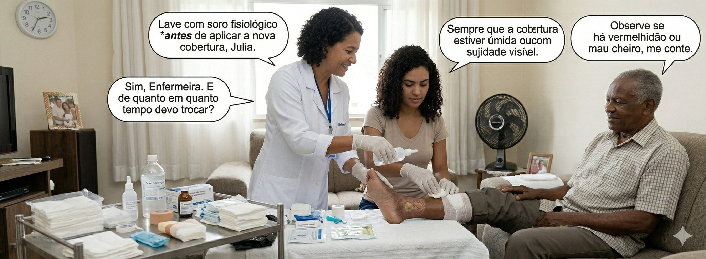
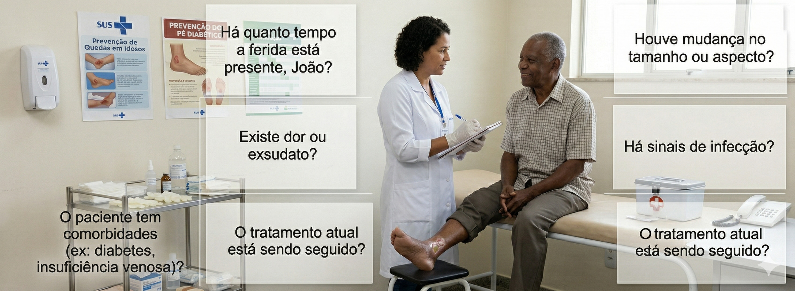

01 · Origem histórica
Um filho de parteira que ajudava a gerar ideias
Sócrates nasceu em Atenas por volta de 470 a.C. Sua mãe, Fenarete, era parteira. Ele adotou essa imagem como metáfora central de sua filosofia: assim como a parteira não dá à luz pela mãe, o filósofo não pensa pelo outro — apenas assiste o processo.
O método surge nas praças públicas de Atenas (a ágora), em conversas aparentemente informais onde Sócrates interrogava políticos, artesãos e sofistas, revelando que aqueles que acreditavam saber, na realidade não sabiam.
"Só sei que nada sei" — a ignorância declarada como ponto de partida honesto, não como derrota intelectual.
Sócrates, segundo Platão · Apologia de Sócrates
/imag/agora-atenas-clasica.jpg · 640×240 px mín. ';">
02 · Definição expandida
O que é exatamente a maiêutica?
É um método dialético que se desdobra em duas fases inseparáveis:
Fase 1 — Ironia socrática (eironeia)
Sócrates finge ignorância. Faz perguntas simples que vão revelando as contradições do interlocutor. O objetivo não é humilhar, mas desestabilizar a certeza falsa e abrir um espaço de dúvida genuína.
Fase 2 — Maiêutica propiamente dita
Uma vez que o outro reconhece não saber, começa a busca conjunta. As perguntas guiam rumo a uma compreensão mais profunda e genuína, construída de dentro para fora, não imposta de fora para dentro.
O conhecimento, para Sócrates, já existe latente na alma do interlocutor — apenas precisa ser "extraído" pelo diálogo. Essa ideia conecta-se à sua teoria da anamnese: conhecer é recordar o que a alma já sabe.
03 · Exemplo real em diálogo
Sócrates em ação: o que é a justiça?
Este é o tipo de troca que Sócrates travava na ágora. Observe como cada pergunta desmonta uma certeza e abre outra mais profunda:
Sócrates
Diz-me, Eutífron — o que é o justo?
Eutífron
O justo é devolver o que se deve e dizer sempre a verdade.
Sócrates
E se teu amigo, num momento de loucura, te emprestou uma arma e agora a reclama — seria justo devolvê-la?
Eutífron
...Não. Suponho que nem sempre seria correto.
Sócrates
Então a justiça não é simplesmente devolver o que se deve. O que é, de fato?
O interlocutor, ao tentar responder, descobre que sua definição era incompleta. A contradição não é um fracasso — é o início do pensamento real. Esse momento de perplexidade chama-se aporia.
04 · O processo passo a passo
Da certeza falsa ao conhecimento real
1Pergunta inicial
›
2Resposta confiante
›
3Contraexemplo
›
4Aporia
›
5Busca conjunta
›
6Compreensão profunda
A chave está nos passos 3 e 4: Sócrates não refuta diretamente — propõe um caso-limite que a resposta do interlocutor não consegue explicar. A aporia (estado de não saber) não é o destino, mas a porta para o pensamento autêntico.

/imag/mayeutica-flujo-aporia.png · 640×220 px mín. ';">
05 · O que a maiêutica NÃO é
Diferenças cruciais
✗ Não é isso
Manipular o outro para que chegue à resposta que você já tem em mente
✓ Sim, é isso
Explorar juntos sem saber de antemão onde o diálogo chegará
✗ Não é isso
Debater para "ganhar" e demonstrar que o outro está errado
✓ Sim, é isso
Perguntar para que ambos cheguem a uma compreensão mais honesta
✗ Não é isso
Um truque retórico para envergonhar o interlocutor em público
✓ Sim, é isso
Um ato de respeito: acreditar que o outro tem capacidade de pensar por si mesmo
06 · À luz da realidade atual
Por que importa hoje mais do que nunca?
Vivemos numa época de certezas instantâneas: buscadores que respondem sem perguntar, algoritmos que confirmam o que já acreditamos, redes que recompensam afirmações contundentes em detrimento de reflexões pausadas. A maiêutica é o antídoto exato a essa lógica.
Na educação — da sala de aula transmissora à sala que pergunta
O docente que domina a maiêutica não explica: formula problemas. Em vez de "a Revolução Francesa foi em 1789", pergunta "o que leva um povo a decidir romper com sua própria ordem?". O conhecimento torna-se ativo, situado, pessoal.
Na psicologia e terapia — a pergunta que cura
A terapia cognitivo-comportamental Tcc e a entrevista motivacional aplicam princípios socráticos: em vez de dizer ao paciente o que pensar, o terapeuta pergunta até que o próprio paciente identifique suas contradições, seus medos e seus recursos internos.
Na inteligência artificial — o prompt como maiêutica
Quando um usuário faz boas perguntas a uma IA, está praticando uma forma de maiêutica: extrai do sistema respostas que de outro modo permaneceriam latentes. A qualidade da pergunta determina a qualidade do pensamento emergente.
Na liderança e nas organizações
Os líderes mais eficazes não são os que têm todas as respostas, mas os que fazem as perguntas que ninguém mais se atreve a formular. A maiêutica como cultura organizacional produz equipes que pensam criticamente, não que obedecem passivamente.

/imag/conversacion-critica-contemporanea.jpg · 640×240 px mín. ';">
07 · A tensão filosófica
Pode existir a maiêutica na era das respostas instantâneas?
O problema da velocidade
Google, os feeds algorítmicos e os assistentes de IA operam sob a mesma lógica: dê-me uma resposta, rápido. A maiêutica exige o contrário: lentidão, desconforto, tolerância ao não saber por um momento.
A condenação como dado histórico
Sócrates foi condenado à morte em 399 a.C. por "corromper a juventude" — na realidade, por ensiná-la a duvidar das certezas oficiais. Hoje, essa mesma atitude de dúvida crítica vai contra a economia da atenção e os modelos de negócio que prosperam com usuários que não questionam.
O paradoxo do conhecimento disponível
Nunca tivemos acesso a tanta informação. E, no entanto, a capacidade de pensar criticamente com essa informação parece se deteriorar. A maiêutica não acrescenta mais dados — ensina a interrogar os que já temos.
08 · Ideia central
"Não se trata de ensinar, mas de ajudar a descobrir."
E para isso, é preciso algo que escasseia: a humildade de não ter a resposta antes de fazer a pergunta. O mestre que sabe demais não consegue ensinar com a maiêutica — só quem genuinamente ignora pode perguntar com honestidade.
G10 · PET-Saúde · UFPel — Aplicação clínica
Maiêutica e feridas crônicas: perguntar para cuidar
No cuidado de feridas crônicas — úlceras venosas, arteriais, por pressão, pé diabético — o profissional raramente tem acesso direto a todos os dados clínicos relevantes. O paciente (ou seu cuidador) carrega informações essenciais que só emergem quando perguntadas da forma certa. Isso é maiêutica aplicada à clínica.
O enfermeiro que telemonitoriza não impõe o diagnóstico: conduz o interlocutor a revelar o que sabe, o que sente e o que observa — construindo juntos a avaliação. Perguntar bem é cuidar bem.

Imagem não encontrada: mayeutica/telemonitoramento-ferida.jpg · Tamanho mínimo sugerido: 640×260px ';">
Diálogo maiêutico · Telemonitoramento — identificando o tipo de úlcera
Exemplo real de entrevista socrática com paciente idoso, via telemonitoramento. O profissional não anuncia o diagnóstico — conduz o paciente a descrever a própria ferida:
Profissional G10
Onde está a ferida e há quanto tempo ela está assim?
Paciente
Tá na parte de baixo da perna, no tornozelo. Faz uns três meses já. Fica molhando o curativo.
Profissional G10
Você sente dor na perna? A dor piora quando você fica em pé ou quando deita e levanta a perna?
Paciente
Dói bastante quando fico em pé ou caminhando. Quando deito com a perna levantada, melhora.
Profissional G10
A perna fica inchada? Você tem varizes ou já teve trombose?
Paciente
Sim, incha muito no fim do dia. Tenho varizes há anos.
Profissional G10
A ferida tem bordas irregulares, secreção amarelada e a pele ao redor está mais escura ou endurecida?
Raciocínio clínico emergente
As respostas do paciente indicam úlcera venosa: localização maleolar, dor que melhora com elevação, edema vespertino, histórico de varizes, bordas irregulares com exsudato. O diagnóstico não foi anunciado — foi construído pelas perguntas certas.

Imagem não encontrada: mayeutica/ulcera-venosa-maleolo.jpg · Tamanho mínimo sugerido: 640×260px';">
Recomendação clínica · Maiêutica com o cuidador
No telemonitoramento com cuidadores, a maiêutica revela como o cuidado está sendo feito na prática — e abre espaço para correção sem imposição:
Profissional G10
Como vocês estão fazendo o curativo em casa? Me conta o passo a passo.
Cuidador
A gente limpa com água oxigenada e coloca o curativo por cima. Troca todo dia.
Profissional G10
O que você acha que a água oxigenada faz na ferida? Você já reparou se ela ajuda ou se a ferida demora mais para fechar?
Cuidador
Achei que limpava bem... mas a ferida não fecha. Faz dois meses assim.
Profissional G10
Faz sentido — a água oxigenada pode danificar as células novas que tentam fechar a ferida. O que você acha de experimentar só soro fisiológico? Vamos ver juntos se faz diferença na próxima semana.
Por que isso é maiêutica
O profissional não disse "você está errando". Perguntou até que o cuidador mesmo percebesse a inconsistência. A mudança de conduta nasce de dentro — e tem muito mais adesão do que uma instrução imposta.

Imagem não encontrada: mayeutica/curativo-domiciliar.jpg · Tamanho mínimo sugerido: 640×260px';">
Perguntas-chave · Avaliação socrática de feridas crônicas
Localização e tempo
Onde está a ferida? Há quanto tempo? Já fechou antes e reabriu?
Dor e circulação
A dor melhora com a perna elevada ou piorava? Sente formigamento ou frieza no pé?
Exsudato e aspecto
O curativo fica muito molhado? Tem cheiro? A ferida está mais funda ou larga do que antes?
Comorbidades
Tem diabetes? Controla a glicemia? Toma medicamentos que afetam a cicatrização?
Autocuidado
Como está fazendo o curativo em casa? Quem ajuda? Consegue manter a perna elevada?
Adesão e barreiras
O que dificulta seguir as orientações? Tem medo de algo em relação à ferida?

Imagem não encontrada: mayeutica/consulta-ferida-cronica.jpg · Tamanho mínimo sugerido: 640×260px';">
10 · Fixação de conceitos
Quiz socrático — 10 perguntas
Pergunta 1 de 10
Acertos: 0
11 · Referências
Maiêutica e filosofia socrática
- Platão. Apologia de Sócrates; Mênon; Teeteto. Trad. Carlos Alberto Nunes. Belém: EDUFPA, 2007. [Obras em que a maiêutica é descrita e exemplificada pelo próprio Platão.]
- Hadot, P. Exercices spirituels et philosophie antique. Paris: Études Augustiniennes, 1981. [Análise do método socrático como prática espiritual e pedagógica.]
- Vlastos, G. Socratic irony. Classical Quarterly, v. 37, n. 1, p. 79–96, 1987. DOI: 10.1017/S0009838800031104
- Benson, H. H. Socratic Wisdom: The Model of Knowledge in Plato's Early Dialogues. Oxford: Oxford University Press, 2000.
Maiêutica aplicada à educação e saúde
- Paul, R.; Elder, L. The Art of Socratic Questioning. Tomales: Foundation for Critical Thinking, 2007. [Manual de referência sobre questionar socrático em contextos pedagógicos.]
- Miller, W. R.; Rollnick, S. Motivational Interviewing: Helping People Change. 3. ed. New York: Guilford Press, 2013. [Base da entrevista motivacional — método maiêutico aplicado à clínica e à mudança de comportamento.]
- Beck, J. S. Cognitive Behavior Therapy: Basics and Beyond. 3. ed. New York: Guilford Press, 2021. [Capítulo sobre questionamento socrático na TCC.]
- Overholser, J. C. Elements of the Socratic method: I. Systematic questioning. Psychotherapy: Theory, Research, Practice, Training, v. 30, n. 1, p. 67–74, 1993. DOI: 10.1037/0033-3204.30.1.67
Feridas crônicas — avaliação e telemonitoramento
- Conselho Federal de Enfermagem (COFEN). Resolução COFEN nº 567/2018: normatiza a atuação do enfermeiro no cuidado de estomaterapia. Brasília: COFEN, 2018.
- Wound, Ostomy and Continence Nurses Society (WOCN). Guideline for Management of Wounds in Patients with Lower-Extremity Venous Disease. Mt. Laurel: WOCN, 2019. [Diretrizes internacionais para avaliação e manejo de úlceras venosas.]
- European Pressure Ulcer Advisory Panel (EPUAP); National Pressure Injury Advisory Panel (NPIAP); Pan Pacific Pressure Injury Alliance (PPPIA). Prevention and Treatment of Pressure Ulcers/Injuries: Clinical Practice Guideline. 3. ed. EPUAP/NPIAP/PPPIA, 2019.
- Wounds International. International Best Practice Recommendations: The Prevention and Management of Diabetic Foot Ulcers. London: Wounds International, 2022.
- Oliveira, B. G. R. B. et al. Caracterização das úlceras venosas em pacientes atendidos no ambulatório de reparo de feridas. Revista Brasileira de Enfermagem, v. 65, n. 4, p. 637–644, 2012. DOI: 10.1590/S0034-71672012000400015
- Mello, T. R. C. et al. Água oxigenada no tratamento de feridas: revisão sistemática. Estima — Brazilian Journal of Enterostomal Therapy, v. 19, e1521, 2021. DOI: 10.30886/estima.v19.1008_PT [Evidências contra o uso de H₂O₂ em feridas — base para o diálogo clínico apresentado.]
Telemonitoramento e tecnologia em saúde
- Ministério da Saúde (Brasil). Programa de Apoio ao Desenvolvimento Institucional do SUS (PROADI-SUS): projeto de telemonitoramento de feridas crônicas. Brasília: MS, 2021.
- Organização Pan-Americana da Saúde (OPAS/OMS). Telesaúde e Telessaúde: orientações para implementação. Washington: OPAS, 2020.
- Santana, R. F. et al. Tecnologia digital para monitoramento remoto de feridas crônicas: scoping review. Acta Paulista de Enfermagem, v. 35, eAPE02192, 2022. DOI: 10.37689/acta-ape/2022AO02192
Este material foi produzido com fins educativos no âmbito do PET-Saúde G10 — Telemonitoramento de Feridas Crônicas, Faculdade de Enfermagem da Universidade Federal de Pelotas (FEn/UFPel). As referências seguem as normas ABNT NBR 6023:2018. Os diálogos clínicos são ficcionais e têm caráter pedagógico — não substituem protocolo clínico institucional.
Reflexão final
"Que verdade já está dentro de você, esperando ser descoberta?"
A maiêutica não é um método do passado. É uma atitude diante do conhecimento: a convicção de que pensar bem não consiste em acumular respostas, mas em aprender a fazer melhores perguntas. E em ter a coragem de tolerar o não saber — mesmo que seja por um instante.
![Amor-à-Pele · PET-Saúde UFPEL — Telemonitoramento de Feridas Crônicas]()